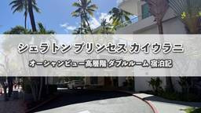

マイルの錬金術師アドバンス
https://haruwari.com
陸マイラーをはじめて累計で1,700万マイル以上のポイントを貯めてきました。ブログでは旅行の体験を中心に発信しています。マイルの貯め方・使い方は体系的にお伝えできるように無料のメール講座を用意しています。初心者から中級者くらいまでの方にお役に立てる内容にしていますので合わせてご確認いただけると幸いです。
フィード
ANAアメックスゴールドが改悪発表！新旧仕様を比較して解説
マイルの錬金術師アドバンス
「本記事はプロモーションを含みます」 ANAアメックス系（一般カード、ゴールド、プレミアム）の仕様改訂が発表されました。 特典が改善された部分もありますが、その代わりに目を引くのが年会費のアップです。 この記事では、当サ […]
3日前

シェラトン プリンセス カイウラニ宿泊記！プラチナ特典・朝食・アクセス方法をブログレビュー
マイルの錬金術師アドバンス
シェラトン プリンセス カイウラニに宿泊してきましたのでレビューさせていただきます。 実際に宿泊した部屋から朝食の内容、プール、周辺の環境までご紹介したいと思います。 ハワイ旅行を計画されている方の参考になれば幸いです。 […]
7日前

【ブログ】マリオット ワイコロア オーシャンクラブ宿泊記！プール・レストラン・部屋などハワイ島の過ごし方を解説
マイルの錬金術師アドバンス
家族旅行でハワイ島にある「マリオット ワイコロア オーシャンクラブ」に宿泊してきました。 ワイコロア オーシャンクラブは、マリオット・バケーション・クラブの施設として1ベッドルームや2ベッドルームの広い客室を利用できるの […]
9日前
アメックスビジネスゴールドの空港ラウンジとプライオリティ・パスのサービスについて解説
マイルの錬金術師アドバンス
「本記事はプロモーションを含みます」 アメックスビジネスゴールドの空港ラウンジサービスについて解説します。 個人向けのアメックスゴールドプリファードにはプライオリティ・パスが付帯しているが、ビジネスカードはどうなっている […]
12日前
OMO関西空港 by 星野リゾート宿泊記！関空直結の便利ホテルに割引で泊まる方法
マイルの錬金術師アドバンス
OMO関西空港 by 星野リゾートに宿泊してきました。 関西国際空港を利用する前後に泊まるホテルを探してましたら、割引して宿泊する方法もご紹介してますのでご参考になれば幸いです。 この記事では、実際の宿泊記として、ブログ […]
13日前
【8/6〜変更】アメックスゴールドプリファード入会キャンペーン最新情報！特典も詳しく解説
マイルの錬金術師アドバンス
「本記事はプロモーションを含みます」 アメックスゴールドプリファードの入会キャンペーンからカードの特典までを詳しく解説していきます。 年会費の決して安いカードではありませんが、特徴を理解して使っていただくと年会費の2倍3 […]
16日前
アメックスゴールドプリファードのプライオリティ・パスと空港ラウンジサービスを詳しく解説
マイルの錬金術師アドバンス
「本記事はプロモーションを含みます」 アメックスゴールドプリファードのプライオリティ・パスについて、どのように活用できるのかを解説していきます。 家族カードの扱いや同伴者の利用条件、具体的な登録方法からアプリログインの手 […]
18日前
【ブログ】マリオットコオリナビーチクラブ宿泊記！プール・レストラン・部屋など過ごし方を解説※2026年の情報を追記
マイルの錬金術師アドバンス
夏休みの家族旅行でハワイのマリオットコオリナビーチクラブに宿泊してきました。 マリオットバケーションクラブの対象施設になりますので、宿泊を検討されていたり、オーナー権の購入を検討されてましたらご参考になりますと幸いです。 […]
20日前
アメックスゴールドプリファードの無料宿泊「フリーステイギフト」おすすめ解説！対象ホテルの価格を比較してみた
マイルの錬金術師アドバンス
「本記事はプロモーションを含みます」 アメックスゴールドプリファードの無料宿泊特典であるフリーステイギフトについて解説していきます。 条件を満たすと高級ホテルに無料で泊まれる特典になりますが、対象ホテルの価格、使い方や家 […]
23日前
アユタヤ遺跡ツアーをブログレビュー！メークロン市場・水上マーケットを1日で効率よく観光してきた
マイルの錬金術師アドバンス
「本記事は広告を含みます」 タイのバンコクを訪れるなら、アユタヤ観光は予定に組み入れたい計画のひとつです。 しかし、個人で行く方法を調べると、電車やタクシーでの移動が必要になり、海外旅行慣れをしていないと中々なハードルが […]
1ヶ月前